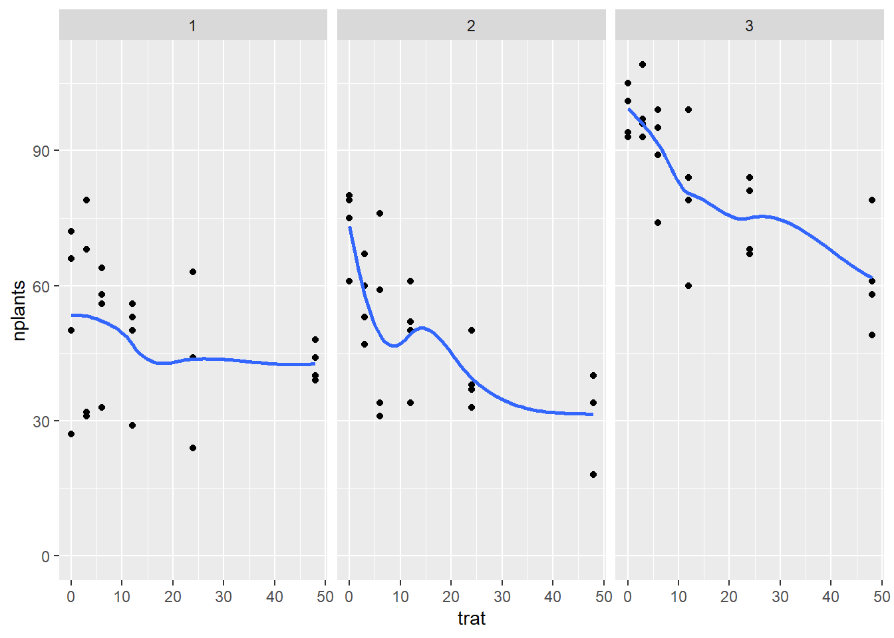
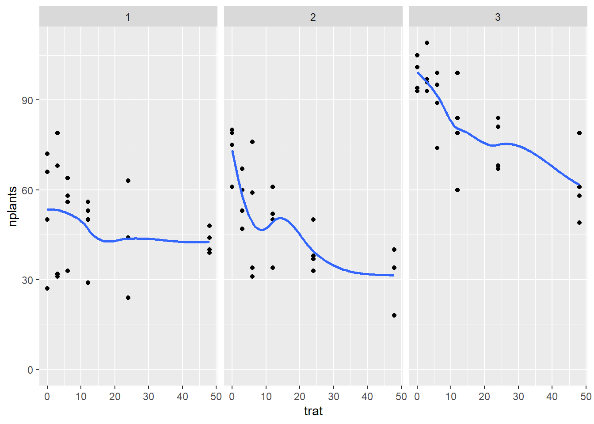

warning(FALSE)
library(tidyverse)
library(readxl)
estande <- read_excel("dados-diversos.xlsx","estande")
estande |> ggplot (aes(trat,nplants))+
geom_point()+
facet_wrap(~exp)+
ylim(0,max(estande$nplants))+
geom_smooth(se=F)
A regressão linear é uma técnica de análise de dados que prevê o valor de dados desconhecidos usando outro valor de dados relacionado e conhecido. Ele modela matematicamente a variável desconhecida ou dependente e a variável conhecida ou independente como uma equação linear.
warning(FALSE)
library(tidyverse)
library(readxl)
estande <- read_excel("dados-diversos.xlsx","estande")
estande |> ggplot (aes(trat,nplants))+
geom_point()+
facet_wrap(~exp)+
ylim(0,max(estande$nplants))+
geom_smooth(se=F)
estande2 <- estande |>
filter(exp ==2) |>
group_by(trat) |>
summarise(mean_nplants =
mean(nplants))
estande2 |> ggplot(aes(trat, mean_nplants))+
geom_point()+
#geom_line()+
geom_smooth(se = F,formula = y ~ poly(x,2), method = "lm")+
annotate (geom ="text",
x=25, y=70,
label= "y=66.3 - 1.777x + //////0.0222x
R² = 0.88")#R² - coeficiente de determinação (regressão linear)Permite que você teste o quão bem seu modelo se ajusta ao conjunto de dados sem sobreajustá-lo. A pontuação AIC recompensa os modelos que atingem uma alta pontuação de qualidade de ajuste e os penaliza se eles se tornarem excessivamente complexos. Por si só, a pontuação AIC não é muito útil, a menos que seja comparada com a pontuação AIC de um modelo concorrente. Espera-se que o modelo com a pontuação AIC mais baixa atinja um equilíbrio superior entre sua capacidade de ajustar o conjunto de dados e sua capacidade de evitar o ajuste excessivo do conjunto de dados.
estande2 <- estande2 |>
mutate(trat2=trat^2)
m1 <- lm(mean_nplants ~ trat,
data=estande2)
summary(m1)
Call:
lm(formula = mean_nplants ~ trat, data = estande2)
Residuals:
1 2 3 4 5 6
12.764 -2.134 -6.782 -3.327 -4.669 4.147
Coefficients:
Estimate Std. Error t value Pr(>|t|)
(Intercept) 60.9857 4.5505 13.402 0.000179 ***
trat -0.7007 0.2012 -3.483 0.025294 *
---
Signif. codes: 0 '***' 0.001 '**' 0.01 '*' 0.05 '.' 0.1 ' ' 1
Residual standard error: 8.117 on 4 degrees of freedom
Multiple R-squared: 0.752, Adjusted R-squared: 0.69
F-statistic: 12.13 on 1 and 4 DF, p-value: 0.02529hist(m1$residuals)
m2 <- lm(mean_nplants ~trat + trat2,
data = estande2)
summary(m2)
Call:
lm(formula = mean_nplants ~ trat + trat2, data = estande2)
Residuals:
1 2 3 4 5 6
7.4484 -4.4200 -6.4386 1.0739 3.0474 -0.7111
Coefficients:
Estimate Std. Error t value Pr(>|t|)
(Intercept) 66.30156 4.70800 14.083 0.000776 ***
trat -1.77720 0.62263 -2.854 0.064878 .
trat2 0.02223 0.01242 1.790 0.171344
---
Signif. codes: 0 '***' 0.001 '**' 0.01 '*' 0.05 '.' 0.1 ' ' 1
Residual standard error: 6.517 on 3 degrees of freedom
Multiple R-squared: 0.8801, Adjusted R-squared: 0.8001
F-statistic: 11.01 on 2 and 3 DF, p-value: 0.04152AIC(m1,m2) df AIC
m1 3 45.72200
m2 4 43.36151A relação é com duas variáveis respostas - teste de associação; Análise de correlação - coeficiente de correlação (coef. de Pearson); R é sempre maior que R².
O coeficiente de correlação de Pearson é um teste que mede a relação estatística entre duas variáveis contínuas. Se a associação entre os elementos não for linear, o coeficiente não será representado adequadamente.
mofo<- read_excel("dados-diversos.xlsx", "mofo")
mofo |>
ggplot(aes(inc, yld))+
geom_point()+
geom_smooth(se=F, method= "lm")+
facet_wrap(~study)Esta função realiza um teste de correlação entre duas variáveis.
#Experimento 1
mofo1 <- mofo |>
filter (study ==1)
mofo1# A tibble: 13 × 5
study treat inc scl yld
<dbl> <dbl> <dbl> <dbl> <dbl>
1 1 1 76 2194 2265
2 1 2 53 1663 2618
3 1 3 42 1313 2554
4 1 4 37 1177 2632
5 1 5 29 753 2820
6 1 6 42 1343 2799
7 1 7 55 1519 2503
8 1 8 40 516 2967
9 1 9 26 643 2965
10 1 10 18 400 3088
11 1 11 27 643 3044
12 1 12 28 921 2925
13 1 13 36 1196 2867cor.test(mofo1$inc, mofo1$yld)
Pearson's product-moment correlation
data: mofo1$inc and mofo1$yld
t = -6.8451, df = 11, p-value = 2.782e-05
alternative hypothesis: true correlation is not equal to 0
95 percent confidence interval:
-0.9699609 -0.6921361
sample estimates:
cor
-0.8999278 #Experimento 2
mofo1 <- mofo |>
filter (study ==2)
mofo1# A tibble: 13 × 5
study treat inc scl yld
<dbl> <dbl> <dbl> <dbl> <dbl>
1 2 1 76 1331 2257
2 2 2 44 756 2393
3 2 3 24 338 2401
4 2 4 33 581 2568
5 2 5 37 588 2320
6 2 6 34 231 2308
7 2 7 31 925 2389
8 2 8 16 119 2614
9 2 9 10 394 2681
10 2 10 8 206 2694
11 2 11 15 275 2674
12 2 12 7 131 2666
13 2 13 19 588 2454cor.test(mofo1$inc, mofo1$yld)
Pearson's product-moment correlation
data: mofo1$inc and mofo1$yld
t = -4.6638, df = 11, p-value = 0.0006894
alternative hypothesis: true correlation is not equal to 0
95 percent confidence interval:
-0.9426562 -0.4790750
sample estimates:
cor
-0.8149448 #Experimento 3
mofo1 <- mofo |>
filter (study ==3)
mofo1# A tibble: 13 × 5
study treat inc scl yld
<dbl> <dbl> <dbl> <dbl> <dbl>
1 3 1 65 5013 2839
2 3 2 33 3619 3375
3 3 3 40 2325 3264
4 3 4 35 2588 3301
5 3 5 48 3969 3220
6 3 6 31 1556 3321
7 3 7 39 3175 3229
8 3 8 25 1763 3517
9 3 9 26 2894 3595
10 3 10 21 350 3702
11 3 11 23 419 3652
12 3 12 25 644 3608
13 3 13 33 2850 3334cor.test(mofo1$inc, mofo1$yld)
Pearson's product-moment correlation
data: mofo1$inc and mofo1$yld
t = -10.9, df = 11, p-value = 3.105e-07
alternative hypothesis: true correlation is not equal to 0
95 percent confidence interval:
-0.9872663 -0.8579544
sample estimates:
cor
-0.956692 #Experimento 4
mofo1 <- mofo |>
filter (study ==4)
mofo1# A tibble: 13 × 5
study treat inc scl yld
<dbl> <dbl> <dbl> <dbl> <dbl>
1 4 1 69 6216 1893
2 4 2 39 2888 2451
3 4 3 41 2272 2232
4 4 4 39 2868 2609
5 4 5 40 2412 2383
6 4 6 40 2372 2480
7 4 7 44 3424 2577
8 4 8 43 1744 2367
9 4 9 26 1456 2769
10 4 10 29 1732 2907
11 4 11 30 1080 2298
12 4 12 34 1592 2976
13 4 13 44 3268 2200cor.test(mofo1$inc, mofo1$yld)
Pearson's product-moment correlation
data: mofo1$inc and mofo1$yld
t = -3.7242, df = 11, p-value = 0.003357
alternative hypothesis: true correlation is not equal to 0
95 percent confidence interval:
-0.9194503 -0.3327077
sample estimates:
cor
-0.7467931 cor.test(mofo1$inc, mofo1$yld)
Pearson's product-moment correlation
data: mofo1$inc and mofo1$yld
t = -3.7242, df = 11, p-value = 0.003357
alternative hypothesis: true correlation is not equal to 0
95 percent confidence interval:
-0.9194503 -0.3327077
sample estimates:
cor
-0.7467931 pcor <- cor(mofo1 |> select(3:5))
library(corrplot)
corrplot (pcor, method = 'number', type = "lower")cor.test(mofo$inc, mofo$yld)
Pearson's product-moment correlation
data: mofo$inc and mofo$yld
t = -2.9274, df = 50, p-value = 0.005133
alternative hypothesis: true correlation is not equal to 0
95 percent confidence interval:
-0.5934601 -0.1223842
sample estimates:
cor
-0.3825092 pcor <- cor(mofo |> select(3:5))
library(corrplot)
corrplot (pcor, method = 'number', type = "lower")
shapiro.test(mofo1$yld)
Shapiro-Wilk normality test
data: mofo1$yld
W = 0.97728, p-value = 0.9636cor.test(mofo1$inc, mofo1$yld, method = "spearman")
Spearman's rank correlation rho
data: mofo1$inc and mofo1$yld
S = 611.02, p-value = 0.01077
alternative hypothesis: true rho is not equal to 0
sample estimates:
rho
-0.6786265 pcor <- cor(mofo |> select(3:5))
library(corrplot)
corrplot (pcor, method = 'number', type = "lower")